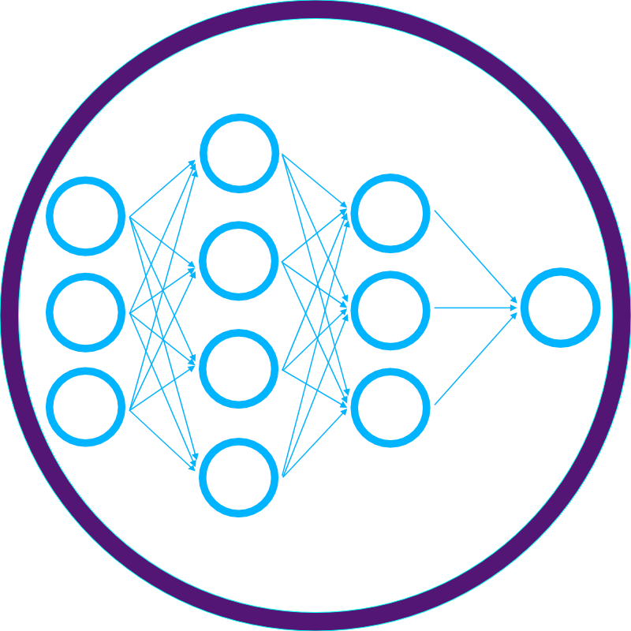
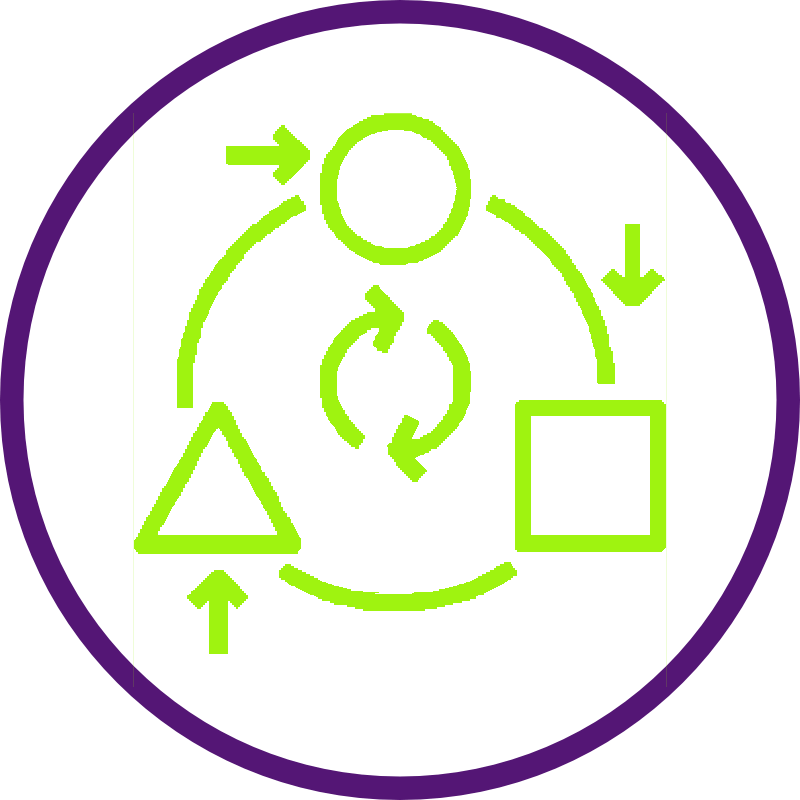
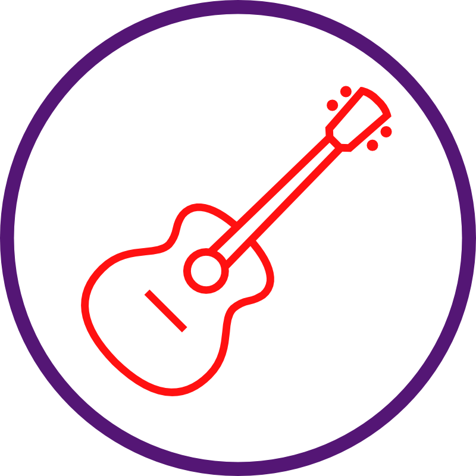

Kenneth (Kira) H. Chan


Hello, I am a Ph.D. candidate at the Department of Computer Science and Engineering at Michigan State University. My research field is the assurance and robustness of learning enabled systems (i.e., systems that rely on AI/ML for decision making). I apply a number of disciplines, such as evolutionary computing (e.g., novelty search), non-cooperative game theory, reinforcement learning, and other related techniques to address / improve the robustness of learning-enabled systems.
Machine Learning (DNN)
Software / Requirements Engineering
symbols">Evolutionary Computing
I use evolutionary computing techniques to address the robustness of ML / DNN components in safety-critical software (i.e., those that have real-world consequences when they fail). Specifically, we aim to develop robust learning enabled systems that can correctly operate in the presence of data that deviate from the expected distribution(s). Furthermore, we design alternate fail-safe capabilities to detect and ensure that if the learning-enable system fails, it will fail in a safe manner.
Autonomous Driving

Self-Adaptive Systems (SAS)
Data
As the capabilities and applications of DNNs are impressive and revolutionary, we are beginning to see more and more safety-critical systems rely on DNNs for decision making. I am interested in technology that can ensure that DNNs can be trusted. An example problem we are currently addressing is to ensure that an autonomous vehicle can correctly respond to traffic scenarios induced by uncertainties of human behaviours.
Cooking
Guitar
Exploring Local Coffee Shops
I have a wide range of hobbies. Some of my hobbies include cooking, Tennis, music, my quest to search for the perfect cup of coffee, etc.